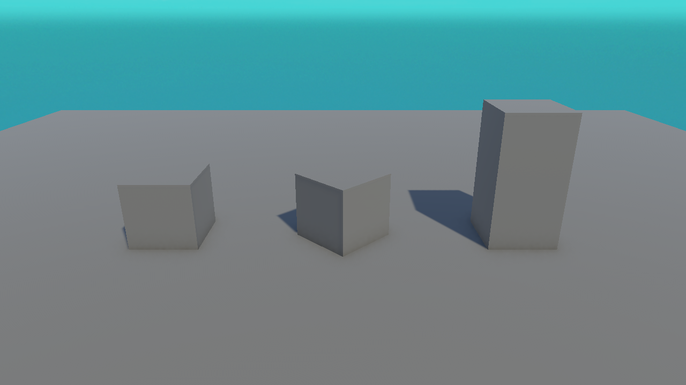

📐 Lesson 2.2: The Transform — Position, Rotation, Scale
Every GameObject has a Transform. It answers three questions: where is it, which way is it facing, and how big is it? Master these three and you can place anything, anywhere.
🎯 Learning Objectives
- Understand the 3D axis system: X, Y, Z
- Use Position, Rotation, and Scale to place objects
- Use the on-screen Move, Rotate, and Scale tools
- Understand parenting and local vs world space (gently)
Estimated Time: 35 minutes
In This Lesson
The 3D Axis System
3D space has three directions, and Unity gives each a colour you'll see everywhere:
- X (red) — left ↔ right
- Y (green) — down ↕ up
- Z (blue) — back ↔ forward
A position like (2, 0.5, -3) means "2 right, 0.5 up, 3 back" from the world centre. Memorize the colours now — they appear on the move tool, the Transform fields, and the scene gizmo.
💡 Memory aid: Red = Right-left (X). Green grows up (Y). Blue goes into the screen (Z).
Position, Rotation, Scale
These three cubes are identical GameObjects — only their Transforms differ. The left cube is normal, the middle is rotated 45° around Y, and the right is scaled to be twice as tall:

| Field | Meaning | Example |
|---|---|---|
| Position | Where the object sits, in units | (0, 0.5, 0) = half a unit up |
| Rotation | How it's turned, in degrees | (0, 45, 0) = turned 45° around Y |
| Scale | Its size multiplier (1 = normal) | (1, 2, 1) = twice as tall |
The Transform Tools
You can type exact values in the Inspector or drag with the on-screen tools. The tool buttons live at the top-left of the Toolbar, and each has a keyboard shortcut:
- Move (W) — drag the coloured arrows to reposition.
- Rotate (E) — drag the coloured rings to turn.
- Scale (R) — drag the coloured handles to resize.
✅ Pro Tip
Drag for rough placement, then fine-tune with exact numbers in the Inspector. For anything that needs to be precise (like sitting exactly on the floor), always type the value.
Parenting: Transforms Inside Transforms
In the Hierarchy you can drag one GameObject onto another to make it a child. A child moves, rotates, and scales with its parent — like a hat on a head.
Move the Car and all four wheels follow. A child's Transform values are measured relative to its parent — that's called local space. This is why the robot in our example scene has dozens of child bones that all move with it.
💡 Don't overthink this yet. Just remember: children follow their parent. We'll use parenting practically when we build the mini-game.
Hands-on Exercise
🏋️ Exercise: Recreate Figure 1
- In a scene with a floor, add three Cubes.
- Cube 1: Position
(-2.5, 0.5, 0), leave rotation and scale default. - Cube 2: Position
(0, 0.5, 0), Rotation(0, 45, 0). - Cube 3: Scale
(1, 2, 1), then Position(2.5, 1, 0)so it rests on the floor.
💡 Why Position Y = 1 for the tall cube?
Scaling to height 2 makes it 2 units tall, so its centre must be 1 unit up to sit on the floor (half of 2).
🎯 Quick Quiz
Question 1: Which axis points up?
Question 2: A child GameObject's position moves when...
Summary
🎉 Key Takeaways
- 3D uses three colour-coded axes: X right/left, Y up/down, Z forward/back.
- The Transform holds Position, Rotation, and Scale.
- Use the Move (W), Rotate (E), Scale (R) tools or type exact values.
- Children follow their parent's Transform.
🚀 What's Next?
Objects have shape and position — next we make them look good. Lesson 2.3 covers meshes and materials (colour!).